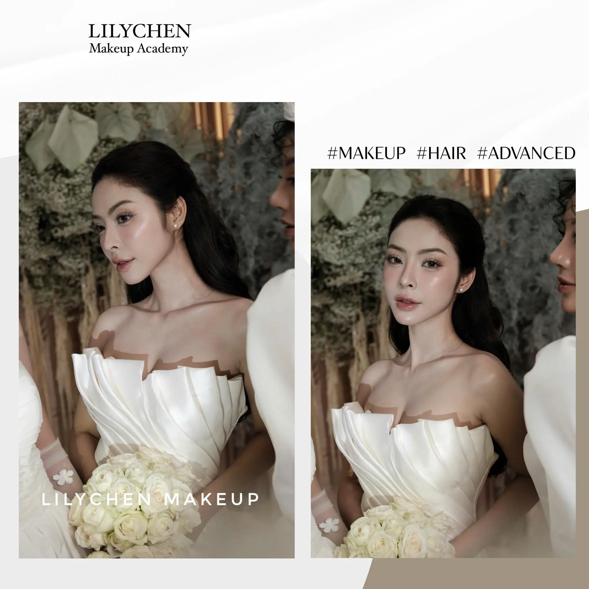

Em mê makeup và nghe nói nghề trang điểm cô dâu “hái ra tiền”? Đúng là vậy — nhưng quanh em ai cũng nói chung chung, không ai chỉ rõ bắt đầu từ đâu.
Mùa cưới ở Việt Nam gần như quanh năm. Cầu thì lớn, mà thợ giỏi thì luôn thiếu.
Trong bài này, chị Lily nói rõ với em: học makeup cô dâu thực chất kiếm được bao nhiêu, cần học những kỹ thuật gì, và lộ trình từ số 0 đến nhận được khách cưới đầu tiên. Đọc xong em sẽ biết mình nên bắt đầu thế nào.

Vì sao học makeup cô dâu là ngách đáng theo nhất?
Trong nghề makeup có nhiều hướng, nhưng cô dâu là ngách chị khuyên em để mắt tới nhất. Có ba lý do:
- Cầu ổn định quanh năm. Mỗi ngày ở Việt Nam có hàng nghìn đám cưới — và cô dâu nào cũng cần được trang điểm. Đây là nhu cầu gần như không bao giờ tắt.
- Đơn giá cao. So với makeup đi tiệc thông thường, một gương mặt cô dâu được trả công cao hơn hẳn vì đòi hỏi kỹ thuật và trách nhiệm lớn.
- Dễ xây thương hiệu cá nhân. Ảnh cô dâu đẹp là “portfolio sống” — khách cưới hay giới thiệu nhau, nên có tiếng rồi thì đơn về đều.
Nói cách khác, học makeup cô dâu không chỉ là học một kỹ thuật, mà là bước vào một ngách có thị trường lớn và bền.
Makeup cô dâu thu nhập bao nhiêu?
Đây là phần em quan tâm nhất, nên chị nói thẳng bằng con số thị trường.
| Hình thức | Thu nhập tham khảo |
|---|---|
| Makeup cô dâu mỗi gương mặt | Khoảng 1,5 – 3 triệu/mặt (tùy phong cách, kinh nghiệm) |
| Mỗi buổi (cô dâu + người thân) | Có thể 1 – 5 triệu trở lên |
| Mùa cưới cao điểm | Thu nhập rất cao nếu kín lịch và có thương hiệu |
Con số này cao hơn nhiều so với makeup thông thường. Một makeup artist có nghề vững có thể kiếm 10–20 triệu/tháng (theo tổng hợp từ các trang hướng nghiệp như Glints Vietnam) — và cô dâu là một trong những mảng đẩy thu nhập đó lên.
Nhưng chị nói thật: mức cao chỉ đến với người có tay nghề thật và portfolio đẹp. Khách cưới rất kỹ — họ không giao ngày trọng đại cho người làm chắp vá. Vì vậy đầu tư học bài bản từ đầu là điều đáng giá.
Học makeup cô dâu cần học những gì?
Makeup cô dâu khó hơn makeup thường, vì phải đẹp bền cả ngày dài và lên ảnh phải sắc nét. Một lộ trình bài bản thường gồm:
Kỹ thuật nền tảng
- Đánh nền bằng nhiều cách (mút latex, cọ, tay) cho từng loại da.
- Tạo khối: highlight và shading để gương mặt có chiều sâu.
- Vẽ bóng mũi, tạo dáng mũi thanh tú.
Kỹ thuật chi tiết
- Tỉa, vẽ và phẩy sợi chân mày tự nhiên.
- Vẽ eyeliner bằng nhiều chất liệu (gel, nước, bút).
- Tán màu mắt, đánh má, trang điểm môi hài hòa tổng thể.
Các phong cách cô dâu
Đây là phần khiến makeup cô dâu khác biệt. Em cần xử lý được nhiều phong cách:
- Cô dâu tiệc ngày — trong trẻo, nhẹ nhàng.
- Cô dâu tiệc đêm — sắc nét, sang hơn dưới ánh đèn.
- Cô dâu chụp ngoại cảnh — lên ảnh đẹp, bền dưới nắng.
Học đủ ba phong cách này, em mới tự tin nhận đa dạng khách. Và tất cả chỉ thành thạo khi được thực hành trên mẫu thật — không thể giỏi bằng cách xem.
Lộ trình học makeup cô dâu từ số 0
Vậy đi từ “chưa biết gì” đến nhận khách cưới ra sao? Ở Lily Chen, chị chia thành 4 bước:
- Nền tảng — hiểu cấu trúc gương mặt, phân tích da, chọn tone màu hợp từng cô dâu.
- Kỹ thuật — luyện thao tác nền, tạo khối, mắt, mày, môi đến khi thành phản xạ.
- Thực chiến trên mẫu thật — thực hành nhiều dạng da, dáng mặt và các phong cách cô dâu. Đây là bước quyết định em có nhận khách được hay không.
- Tốt nghiệp & định hướng — thi tốt nghiệp, cấp chứng chỉ, và được góp ý xây portfolio cô dâu để nhận những khách đầu tiên.
Điều chị tâm đắc là lộ trình này dành 90% thời lượng cho thực hành, lớp tối đa 5 học viên để chị cầm tay chỉnh từng thao tác. Em có thể xem tác phẩm học viên đã làm để hình dung kết quả thật.
Makeup cô dâu có hợp làm nghề tay trái không?
Có — và đây là điều ít ai nói với em.
Không phải chỉ Gen Z theo nghề toàn thời gian mới học được makeup cô dâu. Nhiều người đang đi làm văn phòng cũng học để nhận khách cưới cuối tuần — vì đám cưới thường rơi vào thứ Bảy, Chủ Nhật.

Một buổi makeup cô dâu cuối tuần có thể bằng vài ngày lương văn phòng. Nếu khéo sắp xếp, đây là nguồn thu nhập thêm rất đáng kể mà không cần bỏ việc chính.
Tất nhiên, làm nghề tay trái vẫn cần tay nghề thật. Khách cưới không phân biệt em là thợ toàn thời gian hay bán thời gian — họ chỉ nhìn vào kết quả. Nên dù học để làm thêm, em vẫn nên học cho bài bản.
Học makeup cô dâu ở Bình Dương cần lưu ý gì?
Nhiều bạn ở Bình Dương nghĩ phải lên Sài Gòn mới học được makeup cô dâu tử tế. Thật ra không cần — vừa tốn kém, vừa xa nhà.
Quan trọng là chỗ học dạy em thế nào. Khi chọn nơi học makeup cô dâu ở Bình Dương, em kiểm tra:
- Có dạy đủ các phong cách cô dâu không (tiệc ngày, tiệc đêm, ngoại cảnh) — đừng học mỗi một kiểu.
- Tỉ lệ thực hành trên mẫu thật — cô dâu là makeup khó, học chay là vô dụng.
- Sĩ số lớp nhỏ — để được chỉnh tay từng thao tác.
- Có hỗ trợ xây portfolio và định hướng nghề sau khóa.
Học gần nhà, chi phí hợp lý mà vẫn được kèm sát — đó là lợi thế của một academy local tại Thủ Dầu Một so với việc khăn gói lên thành phố lớn.
Câu hỏi thường gặp
Học makeup cô dâu mất bao lâu?
Tùy lộ trình và độ chăm luyện. Quan trọng không phải học nhanh, mà là được thực hành đủ trên mẫu thật và nắm được nhiều phong cách trước khi nhận khách cưới.
Em chưa biết gì, học nghề này được không?
Được. Khóa bài bản luôn bắt đầu từ nền tảng. Với lớp nhỏ và được kèm sát, người mới vẫn theo kịp
Makeup cô dâu có cần năng khiếu không?
Năng khiếu thẩm mỹ là lợi thế, nhưng phần lớn kỹ thuật là luyện tập mà thành. Người chịu thực hành đều tiến bộ.
Makeup cô dâu khác makeup thường nhiều không?
Khác khá nhiều. Cô dâu đòi hỏi lớp nền bền cả ngày, lên ảnh sắc nét và xử lý được nhiều phong cách — nên cần học chuyên sâu hơn makeup cá nhân.
Học xong có nhận khách cưới ngay được không?
Nếu em luyện đủ và có portfolio, hoàn toàn có thể bắt đầu nhận khách. Sau khóa, chị hỗ trợ định hướng và góp ý portfolio để em tự tin với những khách đầu tiên.
Đang đi làm có học makeup cô dâu để làm thêm được không?
Được. Nhiều người học để nhận khách cưới cuối tuần. Em chỉ cần sắp xếp lịch học hợp lý và chịu khó luyện tay.
Kết luận
Học makeup cô dâu là một hướng đi đáng cân nhắc nếu em muốn một nghề có thu nhập tốt và cầu ổn định. Nhớ ba điều:
- Cô dâu là ngách đơn giá cao, cầu quanh năm — đáng đầu tư học.
- Cần học chuyên sâu — nhiều phong cách, nền bền, lên ảnh đẹp.
- Tay nghề quyết định thu nhập — và tay nghề thì luyện được.
Nếu em muốn xem lộ trình chi tiết, em ghé khóa Makeup Chuyên Nghiệp tại Lily Chen — trong đó có phần kỹ thuật cô dâu — hoặc tham khảo tất cả các khóa học. Còn phân vân, cứ nhắn cho chị — Lily tư vấn thẳng thắn xem hướng nào hợp với em nhất.